The definitive illustrated operational handbook for cashiers, stock managers, accountants, and store owners. Master first-time setup, hardware licensing, split-second barcode checkouts, inventory tracking, shift reconciliation, offline profit intelligence, and standalone spreadsheet auditing.
When launching CM RetailOS for the first time, an intuitive 4-step wizard personalizes your workspace theme, currency, store branding, and root administrator credentials.
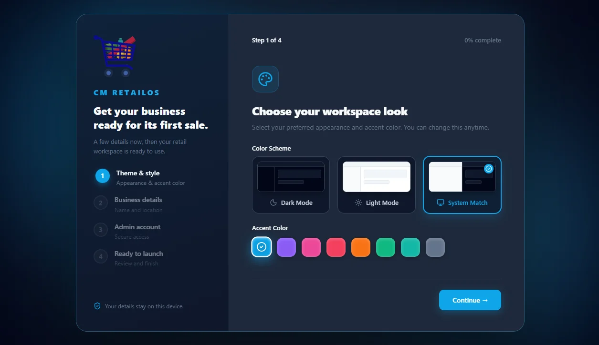
This is the very first screen CM RetailOS shows after installation — Step 1 of 4 of the onboarding wizard. The left rail tracks your progress through Theme & style → Business details → Admin account → Ready to launch, while the main panel asks you to choose your workspace look: a Color Scheme (Dark Mode, Light Mode or System Match) and an Accent Color from the 8-swatch palette.
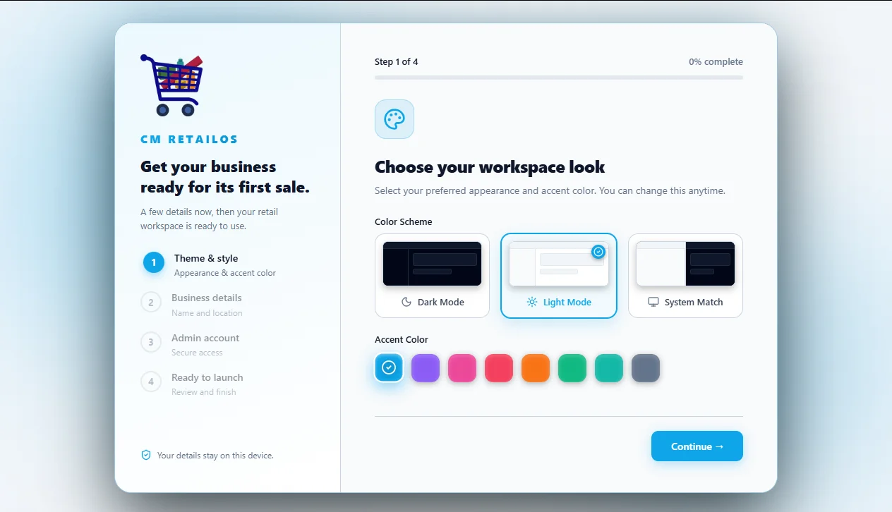
The same Step 1 with Light Mode selected so you can compare both looks before committing. Notice the two reassurances on this screen: “Select your preferred appearance and accent color. You can change this anytime.” and “Your details stay on this device.” — the wizard saves everything locally; no internet account is created.

Step 1 with a custom amber/orange accent selected over Dark Mode. The accent color is the single hue CM RetailOS uses for primary buttons, active sidebar items, links and chart highlights everywhere in the app.
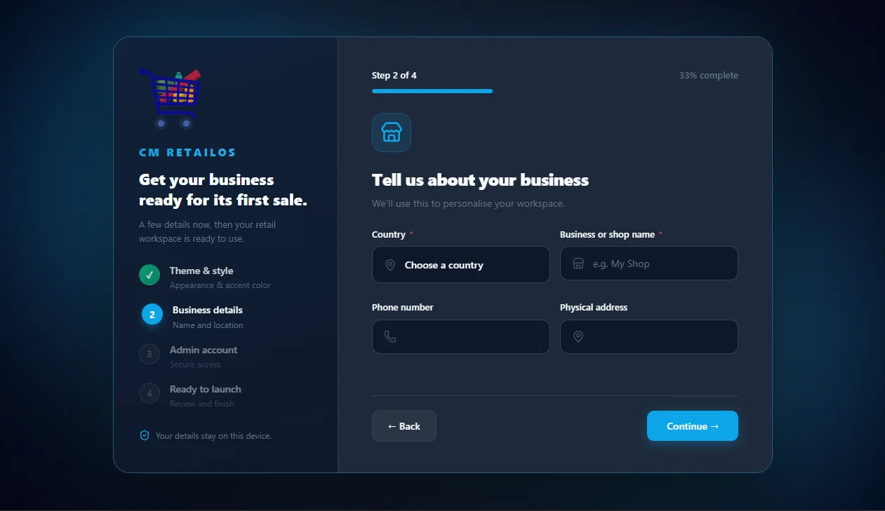
Step 2 of 4 — “Tell us about your business.” The empty form waits for four required inputs: Country, Business or shop name, Phone number and Physical address. These details personalise the workspace and are printed on receipts and reports.
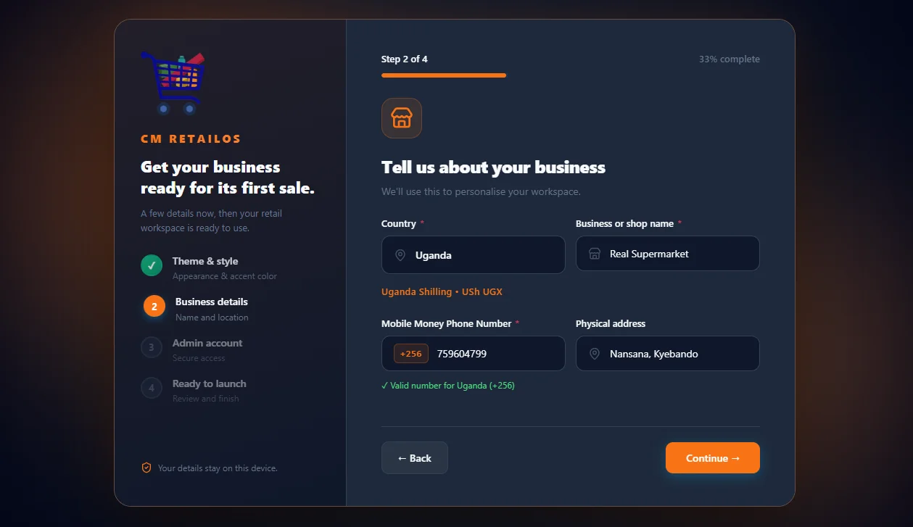
A completed Step 2 for “Real Supermarket”: country Uganda, currency Uganda shilling (USh UGX), Mobile Money phone +256 759604799 with the green “Valid number for Uganda (+256)” confirmation, and address Nansana, Kyebando. The progress bar now reads 33% complete.
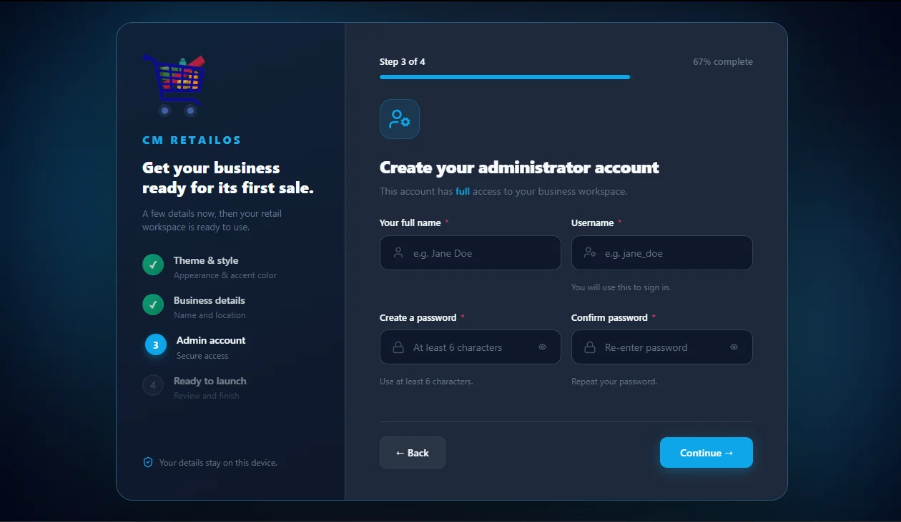
Step 3 of 4 — “Create your administrator account. This account has full access to your business.” You supply Your full name, a Username, a Password and Repeat password. This master account is the only one that can open Settings, see profit analytics and manage staff.
muheki).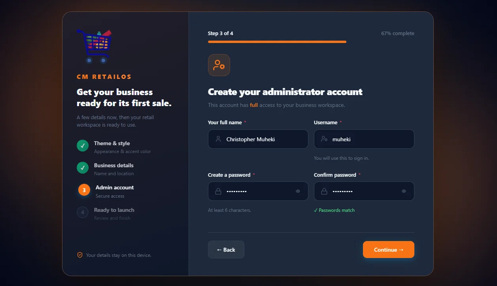
Step 3 filled in for Christopher Muheki (username muheki) with the live
“Passwords match” confirmation showing — that confirmation is what enables the Continue button. The wizard
re-checks both password boxes on every keystroke.
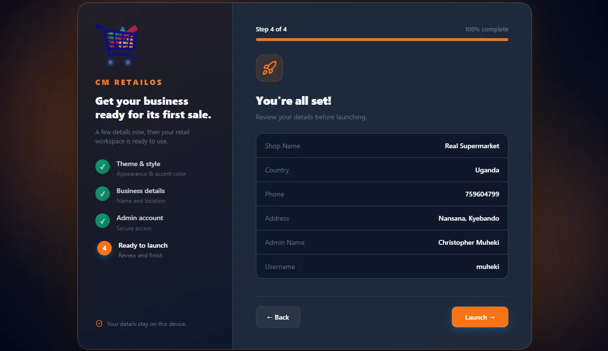
Step 4 of 4 — “You're all set! Review your details before launching.” The summary lists Shop Name (Real Supermarket), Country (Uganda), Phone, Address (Nansana, Kyebando), Admin Name and username at 100% complete. Nothing is written to the workspace until you approve this page.
CM RetailOS uses a secure, cryptographic licensing system tied directly to your computer's motherboard and CPU hardware ID. Works 100% offline with zero cloud dependency.

DEV-7FCE-C62E-8A97-7E31) &
Mobile Money Payment Channels
The Workspace Activation screen. CM RetailOS has already extracted this computer's unique
hardware fingerprint — Device ID DEV-7FCE-C62E-8A97-7E31 — and lists the OFFICIAL PAYMENT LINES
(MTN & Airtel Mobile Money, account name Christopher Muheki). The two badges explain the design:
Offline verification and Bound to this device.
XXXX-XXXX-XXXX-XXXX field with the
Paste button and activate.
1C00-0JRX-9Q5J-CXDT)
The same screen after pasting a purchased key, 1C00-0JRX-9Q5J-CXDT. The
notice “New key: 1-month license – Starts when activated” tells you the countdown begins only when
activation succeeds, not when you buy the key.
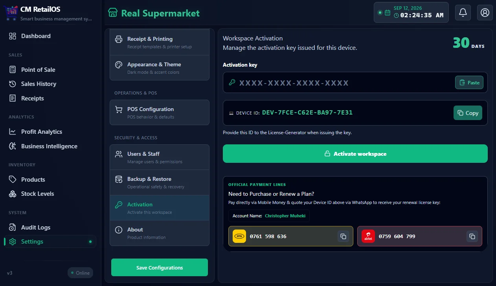
Settings → Activation, the in-app home of your licence. It repeats your Device ID, shows the activation key field, the remaining-days gauge (about 30 days on a fresh 1-month licence at 5,000 UGX/month, grace period noted) and the same official Mobile Money payment lines for renewals.
Role-Based Access Control (RBAC) ensures cashiers are locked strictly to checkout counters while administrators access financial profit ledgers.
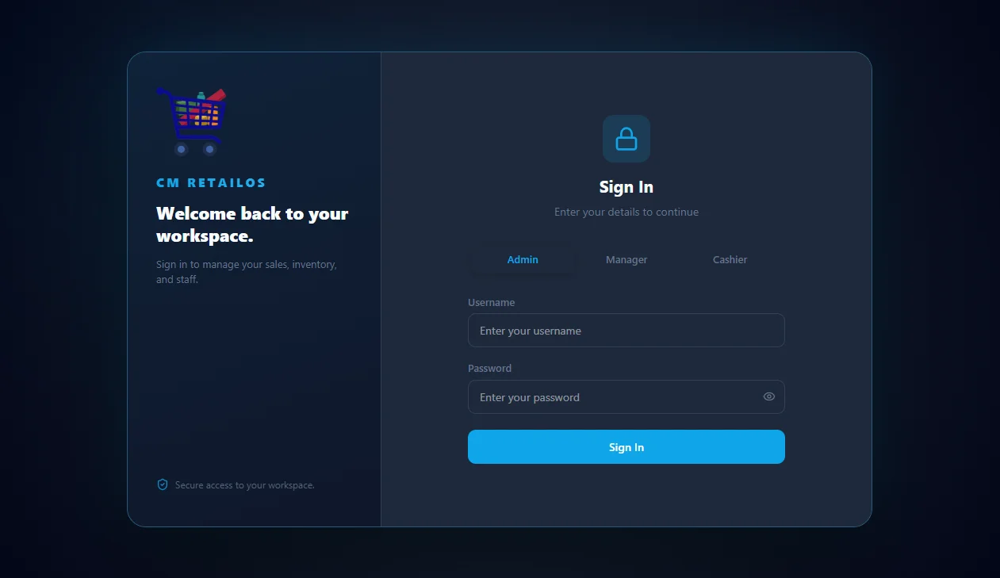
The sign-in gateway — “Welcome back to your workspace.” One window serves the whole team: role tabs (Admin / Manager / Cashier) sit above the Username and Password fields. The role you pick decides which menus and figures you will see after signing in.
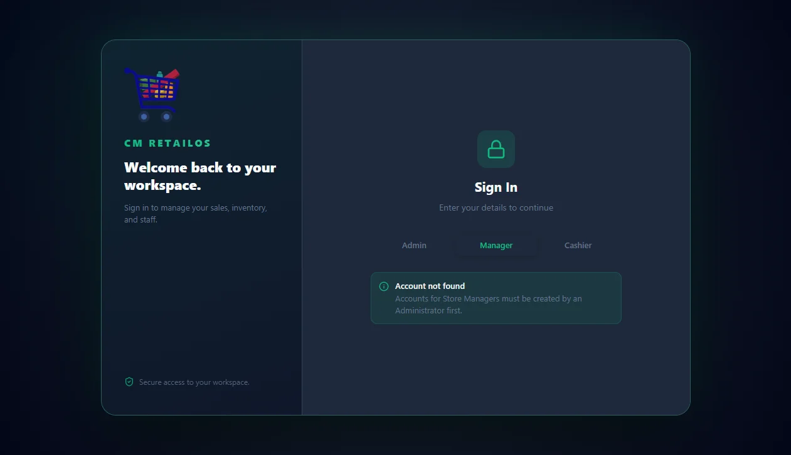
Role provisioning guard in action: when clicking the Manager tab before any Store Manager account has been created, CM RetailOS displays an informative guidance notice: “Account not found — Accounts for Store Managers must be created by an Administrator first.” The sign-in form is safely withheld until an administrator provisions the account.
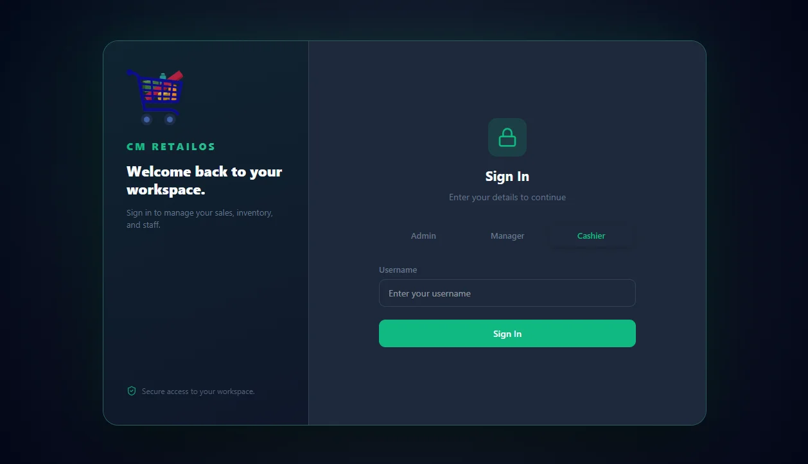
The dedicated Cashier sign-in mode branded “Secure access to your workspace”. Built for maximum counter efficiency: cashiers only need to enter their assigned Username to access their terminal. There are no passwords or PINs required for cashiers, enabling rapid lane handovers while keeping sensitive business data completely protected.
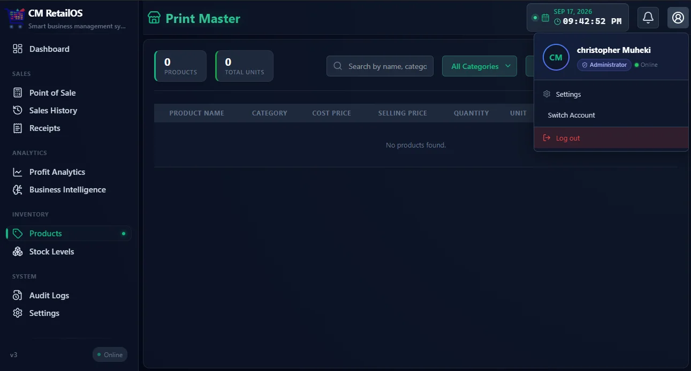
The header profile menu opened for Christopher Muheki (Administrator). It confirms who is currently signed in and their role, and offers Settings plus Switch Account without closing the app.
Monitor real-time sales revenue, estimated net profit, orders volume, inventory valuation, hourly traffic curves, and automated stockout alerts.

The executive dashboard on day one for “My Duuka”: Today's Revenue USh 0, Today's Profit USh 0, Orders Today 0, Total Inventory Value USh 0, an empty 7am–11pm Sales Overview curve and an empty Top Selling Products list. This is the zero-state baseline before the first sale is rung up.
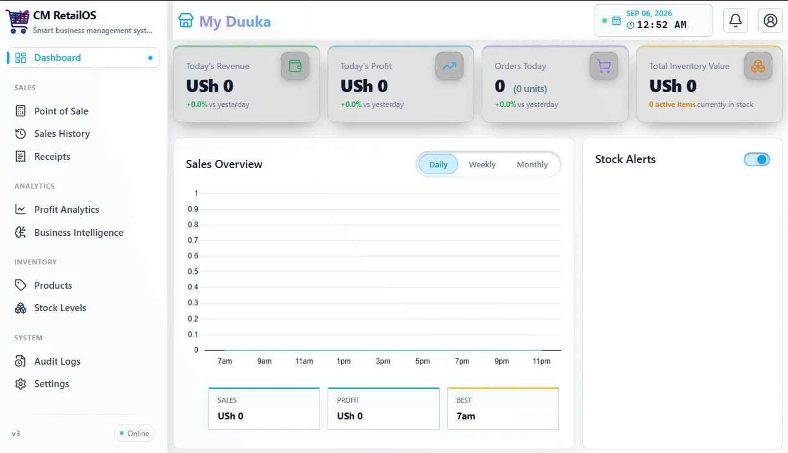
The dashboard annotated by its left sidebar — the map of the whole application: SALES (Point of Sale, Sales History, Receipts), ANALYTICS (Profit Analytics, Business Intelligence), INVENTORY (Products, Stock Levels) and SYSTEM (Audit Logs, Settings). The header carries the live date and clock (SEP 06, 2026 12:52 am) plus an Online status badge.

A live trading day in Light Mode: UGX 11,105,000 revenue, UGX 3,196,200 profit, 33 orders — each with “vs yesterday” percentages — a hoverable hourly curve (the tooltip reads Sales UGX 16,201,000 / Profit UGX 4,863,700 at 1pm), Total Inventory Value UGX 82,300,000 across 90 active items, and the Top Selling Products leaderboard led by USB-C Cable 2M (656 units).

The same dashboard in Dark Mode at 6:01 PM, focused on the Stock Alerts panel: Quilted Shoulder Tote (low stock, 2 left), Aviator Sunglasses (out of stock, 0), Denim Jacket Vintage (low, 9) and Fleece Neck Scarf (out) — each with an Adjust shortcut — plus a tooltip marking the 7pm sales peak.

The dashboard running a second business, “ug electronics” (USh 7.58M revenue, USh 2.32M profit). Everything — header shop name, currency labels, KPIs and leaderboards — is re-branded per workspace from the details entered in the setup wizard.

The notifications centre (bell icon, top-right). It collects live operational events — stockout warnings, inventory drops and best-seller alerts — in one feed so you never have to hunt for them.
Manage unlimited products, track stock thresholds, calculate automatic profit margins, and transform any Android phone into a high-speed camera scanner.
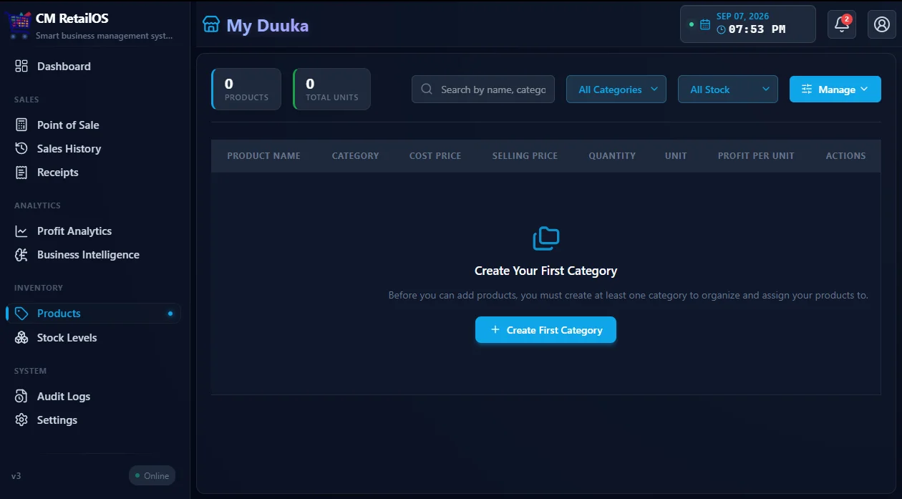
The Products page on a fresh install, blocked by the “Create Your First Category” prompt: “Before you can add products, you must create at least one category to organize and assign your products to.” CM RetailOS insists on categories first because they power the POS tiles, the filters and the profit-by-category charts.
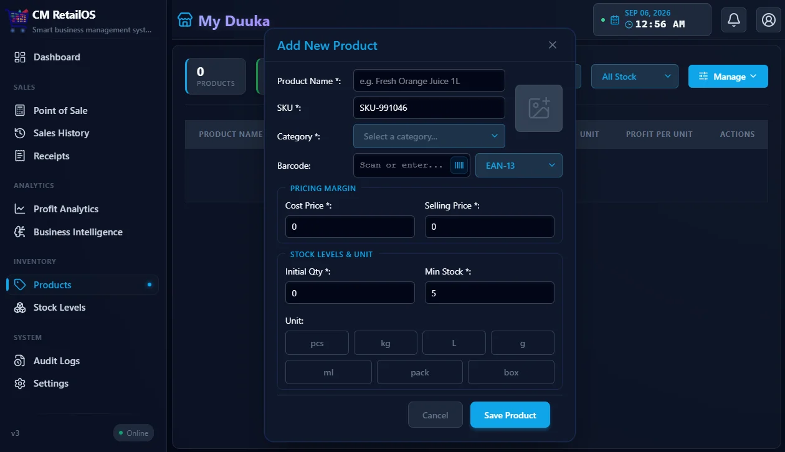
The Add New Product modal over the products table. Fields shown: Product Name
(placeholder “eg. Fresh Orange Juice 1L”), an auto-generated SKU (SKU-991046), Category
picker, Barcode “Scan or enter…” with EAN-13 format, Cost Price, Selling Price with an automatic MARGIN
readout, Qty, Min Stock and the unit selector (pcs / kg / L / g / ml / pack / box).

The Add Product Image dialog with its two sources: “Browse PC — Select an image from this computer or a connected USB drive” and “Take Photo (Android) — Connect phone via USB with USB Debugging enabled.” The second option turns any Android phone into the shop's camera and barcode scanner.

A populated product list (fashion store example) showing the columns you manage daily — Name, Category and Price, with Quantity rendered as live stock badges such as In Stock and Low Stock — and the search box plus category/stock filters above the table.

In Stock (20), Low Stock
& Out of Stock Badges Update with Every Sale
The selling lane in table mode for “ug electronics”, where every SKU row carries its live
stock count — In Stock (20), In Stock (10), In Stock (5)… — beside
the price and a one-tap add button, with “Scan barcode or search products” at the top.
Lightning-fast cashier terminal supporting barcode laser scanning, visual touch tile catalog, cash checkout, and instant thermal receipt printing.

The dedicated Cashier Terminal in secure session mode: product lane on the left (Name, Category, Price, Quantity, Action), an empty Cart (0) on the right with Subtotal / Discount / Total at USh 0, and a Checkout button. Cost prices and profit figures are deliberately absent — cashiers see selling prices only.

The POS in Visual Tile Grid mode: high-resolution photo tiles carrying real-time In Stock, Low Stock, and Out of Stock badges on the left, rapid barcode/product search, and the active cart on the right ready to ring up sales and calculate change.
The same terminal switched to Table List View: compact Name / Category / Price / stock-badge rows with + add buttons, the “Scan barcode or search products” box and an empty cart waiting for the first scan. Table mode suits large baskets and rapid high-volume checkout lanes.
Turn raw checkout transactions into actionable financial intelligence: live net profit margins, peak sales hours, and frequently bought together basket combinations.

Profit Analytics — the owner's money screen: GROSS PROFIT UGX 3,148,200, NET PROFIT (TODAY), PROFIT MARGIN 28.6% and TOTAL REVENUE UGX 11,005,000, each with vs-yesterday deltas, an hourly Profit Trend curve and the Profit by Category donut (Electronics / Hardware / Fashion), plus an Export Report button.

Business Intelligence Overview: the Peak Sales Hours histogram (a clear 1–3 pm rush), the Most Profitable Products ranking, and the Frequently Bought Together market-basket matrix — e.g. Cordless Drill 20V + Wood Screws 1.5", Cotton Crewneck Tee + Running Sneakers — with purchase-frequency bars.

Profit Analytics in Light Mode with a category tooltip open: hovering the donut reveals Hardware's exact contribution, UGX 1,060,200. The same data as Figure 7.1, rendered for bright rooms and printed reports.
Customize company profile, thermal receipt templates, POS scanner audio beeps, multi-staff permissions, and 1-click automated database backups.
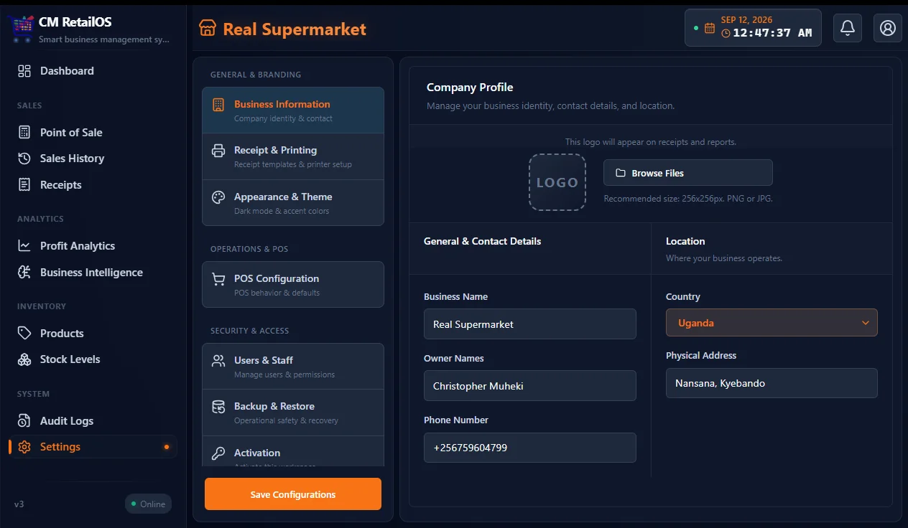
Settings → Business Information: the Company Profile editor with Business Name (Real Supermarket), Owner Names (Christopher Muheki), Phone (+256759604799), a logo uploader (“This logo will appear on receipts and reports”, recommended 256×256 PNG/JPG) and the location block. The left rail groups all settings into General & Branding, Operations & POS and Security & Access.

Settings → Receipt & Printing with the live thermal preview on the right: Header Text (“Thank you for shopping with us!”) printed beneath the store name, Footer Text (“Goods once sold are not returnable.”), plus Printing Automation toggles — Auto-Print Receipts, Show Store Logo, Show Cashier Name — and Number of Copies. The preview shows a real slip: Receipt #10042 with Matooke 1kg, Fresh Avocado and Tomatoes totalling USh 15,000.

The printer side of Receipt & Printing: the Default Printer selector (EPSON TM-T88V Receipt in this capture), the Auto-Print Receipts switch and Number of Copies. This is where thermal hardware is bound to the POS.
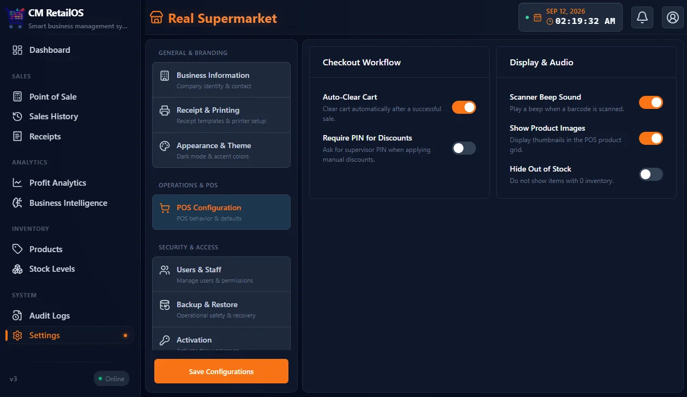
Settings → POS Configuration — the behaviour switches for the checkout lane: Auto-Clear Cart, Require PIN for Discounts (“Ask for supervisor PIN when applying manual discounts”), and the Display & Audio options: Scanner Beep Sound, Show Product Images, Hide Out of Stock.
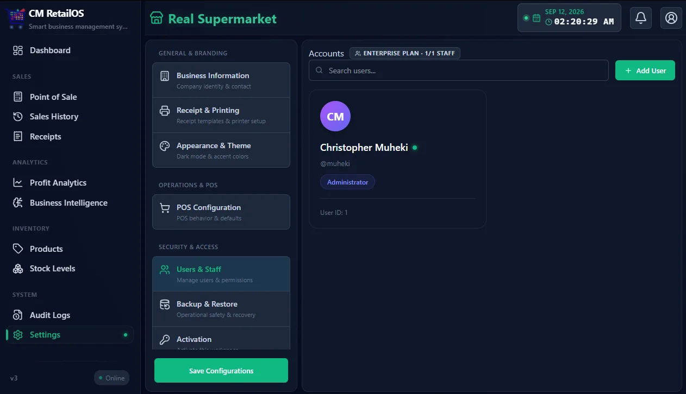
Settings → Users & Staff on day one: “ENTERPRISE PLAN – 1/1 STAFF” with a single
account, Christopher Muheki (@muheki, Administrator, User ID 1). The staff counter shows
seats used versus your plan.
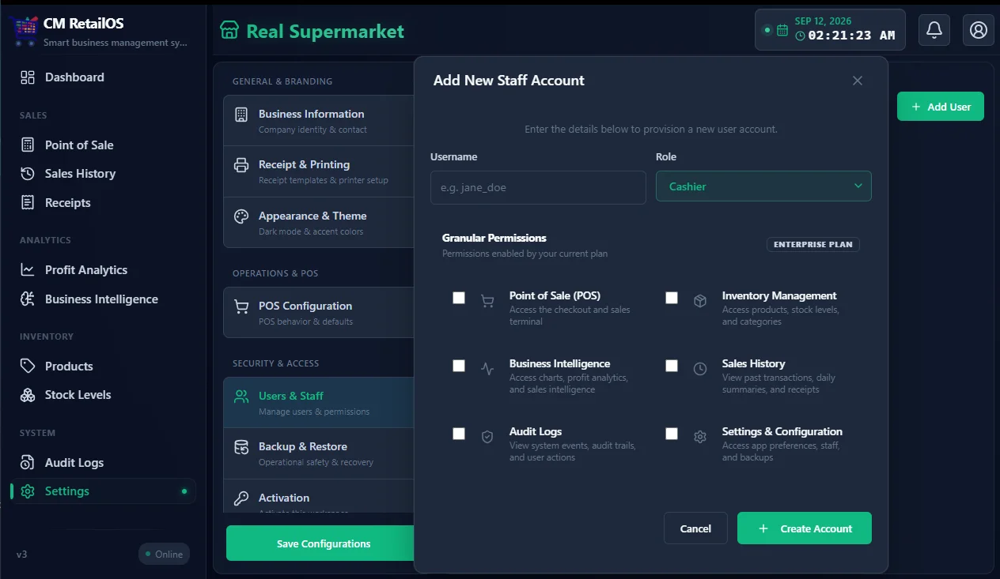
The Add New Staff Account modal: Username field, Role dropdown (Cashier, Manager…) and the Granular Permissions matrix — Point of Sale (POS), Business Intelligence, Inventory Management, Sales History, Settings & Configuration — each with a plain-language description.
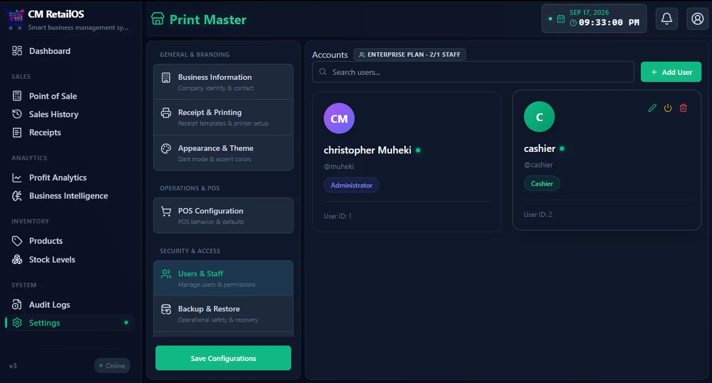
The grown-up staff directory: “ENTERPRISE PLAN – 2/1 STAFF” listing christopher Muheki
(Administrator, User ID 1) and cashier (@cashier, User ID 2). Each account card offers edit
(pencil), suspend (power) and delete (trash) controls, with an Add User button and user search above.

Settings → Backup & Restore: Backup Count 3, Database Size 4.00 KB (SQLite), Last/Total backup sizes, and a table of snapshots with DATE, SIZE, TYPE (Manual/Automatic), STATUS (Verified) and a Restore action per row, plus Export Database and Import Data buttons.

Settings → About: the product identity page — CM RetailOS “Developed & Powered by CM Studios UG”, VERSION 3.0.0, MARKET “African Businesses”, the About CM RetailOS mission text, and the developer profile of Christopher Muheki (Self-Taught Software Engineer · Founder) with support lines +256 759 604799 / +256 761 598636.
Bundled companion desktop application. Open, filter, search, calculate sums, and audit exported Excel (.xlsx, .xls) and CSV sales reports with zero dependencies on Microsoft Office.
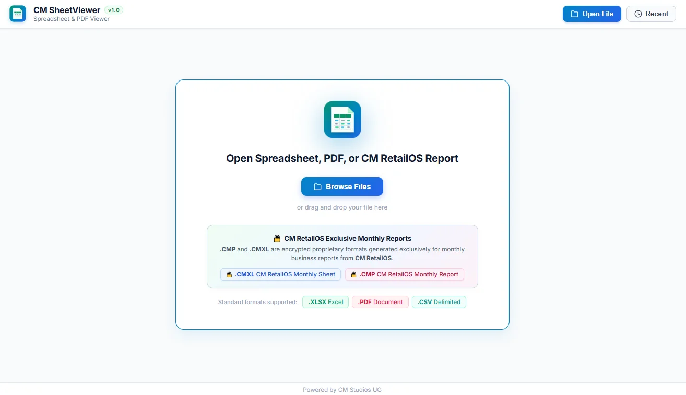
.cmxl & .cmp Monthly Ledgers
CM SheetViewer v1.0's opening screen — “Open Spreadsheet or PDF Report: Preview merchant exports, inventory catalogs, and financial reports instantly without Microsoft Excel or Acrobat Reader” — with supported formats .XLSX Excel, .CSV Delimited, .PDF Report and .XLSM Macro.
.cmxl / .cmp ledgers securely.
Every time you export sales, inventory, profit sheets, or debtor records from CM RetailOS, you can open them instantly in CM SheetViewer:
In CM RetailOS, navigate to Profit Analytics or Sales History and click Export Report > Excel (.xlsx) or CSV.
Launch CM SheetViewer from your Windows Desktop. Open the exported spreadsheet. The high-speed table viewer renders tens of thousands of rows instantly with zero lag.
.CMP and .CMXL are encrypted proprietary formats exported automatically by CM RetailOS for monthly business reports. They strictly require Admin credentials to decrypt and open in CM SheetViewer, guaranteeing that confidential store earnings and ledgers can only be accessed by authorized leadership.
Quick answers to common daily checkout and management scenarios.